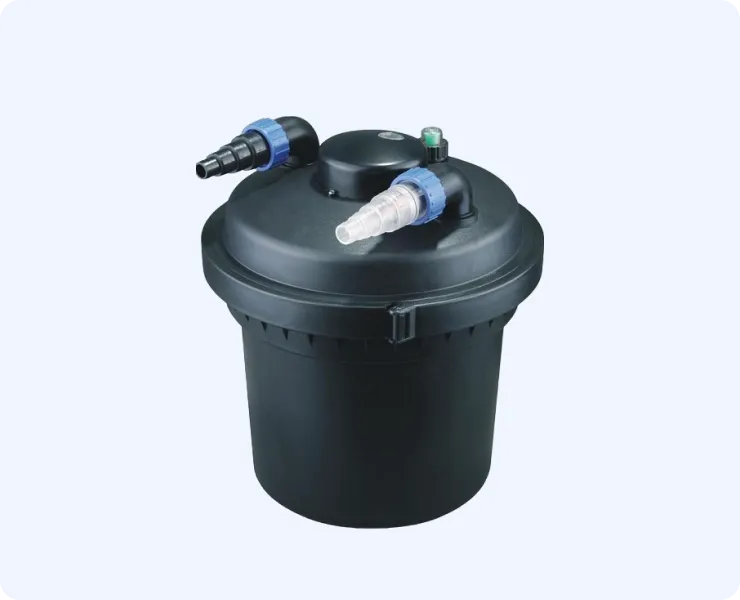

Фильтры для пруда
Фильтр напорный CPF-380, с УФ 11Вт, для пруда до 12000л
Цена и наличие
- 1 шт.573,91 BYN / шт.В наличии
Данные на 23.11.2026.
Характеристики
- Бренд
- Sunsun
- Тип фильтра
- напорный
- Максимальный объем пруда без рыбы
- до 12000 л
- Максимальный объем пруда с рыбой
- до 6000 л
- Уф-лампа
- 11 Вт
- Для прудов с растениями
- до 12000 л
- Для прудов с рыбой
- до 6000 л
- Мощность УФ-лампы
- 11 Вт
- Длина кабеля
- 4,5 метра
- Напряжение
- 220-240V 50Hz
- Рекоменд. насос
- до 10000 л/ч
- Габаритные размеры
- 380*380*525 мм
- Объем фильтра
- 25 л
- Производитель
- SunSun
- Страна происхождения
- Китай
Описание
SunSun CPF-380 - прудовый фильтр с УФ- лампой. Фильтры серии CPF - высокоэффективная биомеханическая фильтрация с технологией УФ очистки.
SunSun CPF-380 – прудовый фильтр с УФ- лампой 11 Вт. Фильтры серии CPF – высокоэффективная биомеханическая фильтрация с технологией УФ очистки. Фильтр размещается в углублении в земле рядом с прудом, с помощью декора его можно сделать полностью незаметным. Все соединения и технологическая часть располагается в крышке, что позволяет очень просто и удобно обслуживать фильтр. Очищенная вода из фильтра может подаваться в пруд через декоративный водопад.
Преимущества
Простота обслуживания благодаря легкому доступу к функциональным элементам – они расположены в верхней крышке; Функция самоочистки. Водой из фильтра можно поливать растения рядом – в ней много естественных органических удобрений; Сочетание фильтрации и УФ очистки; Встроенный индикатор загрязнения; Большая пропускная способность; Возможность располагать фильтр ниже уровня воды.
Дополнительно
Биофильтрация для пруда – это важнейший этап очистки воды, правильная микрофлора во многом определяет эффективность очистки. Бактериям достаточно от 4 до 6 недель, что бы колонизировать поверхность мочалок фильтра. Сами бактерии находятся в окружающей нас среде. Мы можем довериться естественному ходу событий и ждать пока нужные бактерии поселятся в порах фильтрующего материала, но тогда мы должны очень осторожно и дозировано давать бионагрузку на наш пруд. Однако даже так не удастся избежать цветение воды и огромного количества водорослей на поверхности в первый сезон жизни пруда. Поэтому, лучше всего сразу вносить в пруд правильную микрофлору для эффективной биофильтрации. По истечении 4 недель можно включать УФ-стерилизатор, т.к. бактерии уже заселили мочалки в достаточном количестве. Так называемые первоначальные «стартовые бактерии» помогают сократить время для нового прудового фильтра, чтобы начать его работу. Бактерии активизируются при температуре около 10 – 12 ° С. Температура воды в фильтре не должна превышать 40 ° C, поэтому целесообразно разместить фильтр в тени. Он не должен подвергаться воздействию прямых солнечных лучей. УФ- лампа разрушает клетки бактерий и одноклеточных водорослей при прохождении воды через отсек. Под действием ультрафиолета, бактерии и водоросли сбиваются в более крупные конгломераты и оседают на поверхностях фильтрующих губок, где подвергаются утилизации уже микрофлорой фильтра. Это один из этапов биофильтрации. Там же оседает и весь мелкий и средний мусор, взвесь, находящаяся в воде. Это этап механической фильтрации. Фильтр с механической и биологической фильтрацией обеспечивает здоровый баланс микрофлоры пруда и стабильное качество воды. Вместе с соответствующим насосом (который не входит в комплект, обратите внимание на рекомендуемую мощность прудового насоса) напорный прудовый фильтр SunSun CPF-380 с встроенным УФ стерилизатором является оптимальным решением для пруда объемом до 12000л.